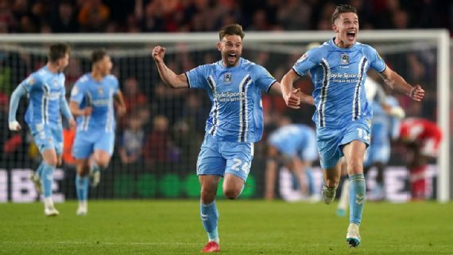
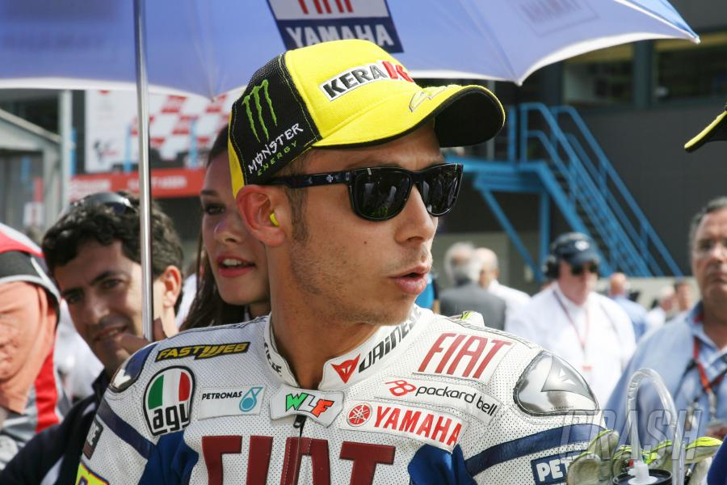

Sports
Why the EFL Championship playoff is the best event in sports?

Don't you just love it when the title gets decided while one team
are sitting in a conference room and the others are losing a match
to a side 51 points back of first place?
If you're a Manchester City fan, employee or family member, then you
do. But for everyone else, a potentially classic Premier League
title race quickly fizzled out into nothing as Arsenal capitulated
after Easter. The same goes for a top-four chase that once included
upwards of six teams but suddenly seemed all-but-decided before the
season was over as Man United and Newcastle sealed the spots with
time to spare. So too did the relegation fight, which included
nearly half the league but now features just three sides (Everton,
Leeds and Leicester) and a two-point gap between 17th and 18th, with
Southampton already down.
IPL 2023 comes full circle as wily CSK face defending champs Titans at Motera

We're back to where we began this season, with the same two teams facing off - one looking to embellish a fabulous record, the other eyeing a new era of dominance
Big picture: Dhoni vs Hardik, one more time
IPL 2023 has come full circle. The season started with Hardik Pandya's Gujarat Titans taking on MS Dhoni's Chennai Super Kings in Ahmedabad. In the final on Sunday, the two teams will once again be face-to-face at the same venue.
Titans had come out on top in the opening game. Earlier this week, CSK levelled the score with a comprehensive win in Qualifier 1. But that match was played on a slow, spinning surface in Chennai. The pitches in Ahmedabad have been much more batter-friendly, with the ball coming onto the bat nicely.
Moreover, CSK have lost all three games they have played in Ahmedabad so far. This is the only venue in the IPL where they have played at least three games and are yet to register a win. Titans, meanwhile, have six wins in nine outings here.
Having said that, CSK will be looking to embellish their already fabulous record; they are the second-most successful team in the tournament's history. One more trophy and they will draw level with Mumbai Indians with five. On the other side, Titans will be keen to establish their dominance. They surprised everyone by emerging as champions in their debut season. They will be focused on making it two in two.
We're back to where we began this season, with the same two teams facing off - one looking to embellish a fabulous record, the other eyeing a new era of dominance
Big picture: Dhoni vs Hardik, one more time
IPL 2023 has come full circle. The season started with Hardik Pandya's Gujarat Titans taking on MS Dhoni's Chennai Super Kings in Ahmedabad. In the final on Sunday, the two teams will once again be face-to-face at the same venue.
Titans had come out on top in the opening game. Earlier this week, CSK levelled the score with a comprehensive win in Qualifier 1. But that match was played on a slow, spinning surface in Chennai. The pitches in Ahmedabad have been much more batter-friendly, with the ball coming onto the bat nicely.
Moreover, CSK have lost all three games they have played in Ahmedabad so far. This is the only venue in the IPL where they have played at least three games and are yet to register a win. Titans, meanwhile, have six wins in nine outings here.
Having said that, CSK will be looking to embellish their already fabulous record; they are the second-most successful team in the tournament's history. One more trophy and they will draw level with Mumbai Indians with five. On the other side, Titans will be keen to establish their dominance. They surprised everyone by emerging as champions in their debut season. They will be focused on making it two in two.
F2: Iwasa takes Drivers’ Championship lead with Monaco Sprint win

Isack Hadjar had retained the lead from reverse grid pole at lights out and led through the first Safety Car phase, deployed after contact between Kush Maini and Clément Novalak. At the restart though, the Hitech Pulse-Eight car slowed with an issue, handing over the lead of the race to fellow Red Bull Junior Team driver, Iwasa.
MMA News Today: Tyson Fury Dismisses Dana White's Proposal To Fight Jon Jones, Mike Perry Inserts Himself Into Jake Paul vs Nate Diaz

Welcome to MMA News Today, a daily feature running down the most interesting stories in the world of mixed martial arts. For May 25, 2023, we’re taking a look at:
-Tyson Fury refuses MMA rules for potential showdown with Jon Jones.
-Mike Perry makes intriguing offer to Jake Paul and Nate Diaz.
-Gordon Ryan dealing with career-threatening health issues.
"I Don't Roll Around The Floor" - Tyson Fury On The Rules For A Jon Jones Fight
It appears the back-and-forth between WBC Heavyweight Champion Tyson Fury and UFC Heavyweight Champion Jon Jones is far from over.
'The Gypsy King' recently took to Instagram to respond to UFC President Dana White's recent comments on potentially booking a fight between him and 'Bones'. Fury once again made clear that he has no interest in stepping into the Octagon. Instead, if Jones wants to lock horns with Fury, he will have to don the boxing gloves for the first time in his illustrious combat sports career.
Considering Jones' propensity for taking fights to the floor to utilize his lethal ground-and-pound and submission games, a straight-up boxing match would be a poor fit.
Valentino Rossi lists his fiercest MotoGP rivals - but ignores one name

Valentino Rossi opted to leave Marc Marquez out when asked to name
his nastiest MotoGP rivalries.
Rossi’s legendary career yielded seven premier class championships, mainstream appeal which elevated the entire sport, and multiple feuds with fellow riders that spanned different generations.
Marquez was perhaps his last true rivalry - and it continues to this day - but Rossi has chosen not to include the Repsol Honda rider among the top three conflicts that define his career.
I would say Jorge Lorenzo, Casey Stoner and Max Biaggi,” Rossi said.
“The one with Biaggi was tough from the start because we never liked each other anyway.
“Then I arrived - a bit of a stupid young man. I immediately started pissing him off!
“Now this one who was the 250cc [championship] said ‘what the f***!’
“And the one that comes from the 125cc already pisses him off. So it started badly right away, and it was a rivalry to the end.
“We fought for the last 500cc world championship and that was nice.”
The personal animosity with riders who could also challenge for the top honours followed Rossi.
“The rivalries with Stoner and Lorenzo were different. Because with [Biaggi] I was the young man who had to beat the old man, and instead with Stoner and Lorenzo I was the old man and they had to try to beat me.
“Lorenzo and Stoner were stronger than Biaggi. In the sense that there was is an evolution of the species, an evolution of the riders.
“So the younger I am, the stronger I go. So afterward it's always more difficult.”
Rossi reminisced on why these rivalries developed on the track over so many years: “[The sport] is dangerous, you tend to have more respect for your opponent and perhaps more than the two who meet in a football match.
“You know that if you play football, almost nothing usually happens, and instead, with the bikes, you still have to keep a bit of a leeway.
“Here, however, it is an individual sport. It's already different and it's a contact sport.”
Rossi’s decision to ignore the name of Marquez when asked to list his three top rivalries will divide MotoGP fans.
Arguably, the ferocity that piqued at the end of the 2015 season remains the defining feud of Rossi’s tenure.
It is something that he has spoken of this year, calling Marquez’s actions “a great injustice” and revealing a back-story about a previously unknown conversation they had in Sepang.